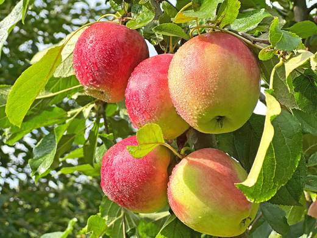
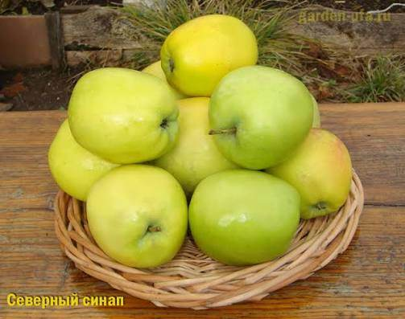
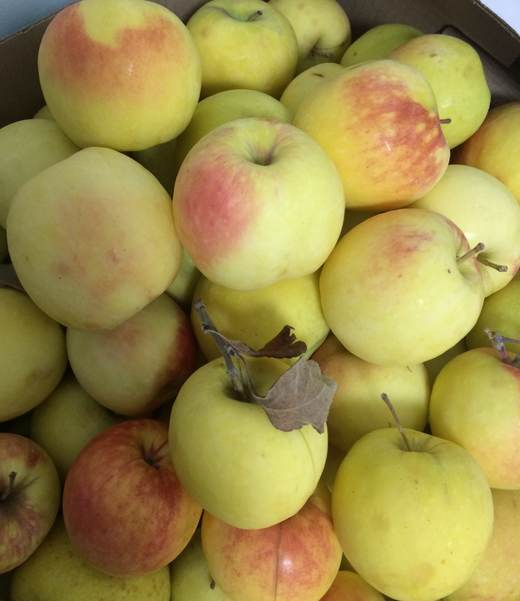
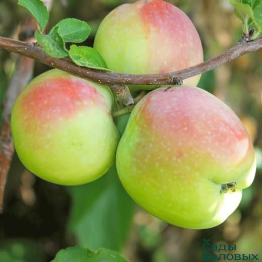

Яблоко-долгожитель: снятое в октябре, доживает до марта–апреля, раскрывая десертный вкус с пряным «синапным» ароматом к Новому году.




Клик по фото — полный размер. Фотографии иллюстрируют сорт/вид; собраны из открытых источников (питомники, сортовые каталоги, Википедия).
Северный синап — знаменитый позднезимний сорт, выведенный из сеянцев южного Кандиль-китайки: «северянин» унаследовал форму и вкус синапов, но получил высокую зимостойкость. Дерево сильнорослое, в молодости с характерной узкопирамидальной (метловидной) кроной, позже — широкопирамидальной, средней густоты.
Плоды выше средней величины (100–130 г), удлинённо-бочковидные — их не спутаешь ни с чем, зеленовато-жёлтые с буровато-красным размытым румянцем. Мякоть мелкозернистая, сочная, кисло-сладкая с освежающей пряностью и сильным «синапным» ароматом. Лёжкость выдающаяся: при 0…+1 °C хранятся 5–7 месяцев.
| Зимостойкость | высокая |
| Устойчивость к парше | средняя |
| Самоплодность | самобесплоден |
| Плодоношение | на 5–6 год, обильное |
| Периодичность | склонен к чередованию при перегрузке |
| Особенность | плоды, снятые недозрелыми, поражаются «загаром» кожицы |
Советы собраны из отзывов садоводов на форумах и из практики питомников; цитаты приведены по источникам ниже.